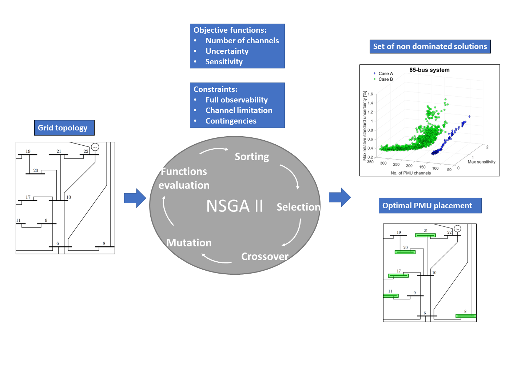
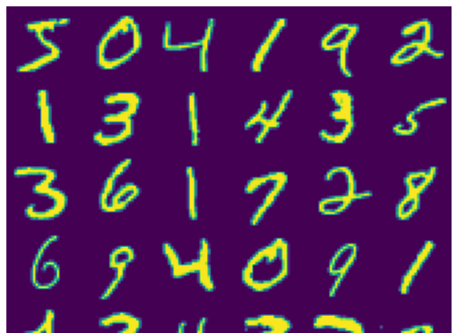
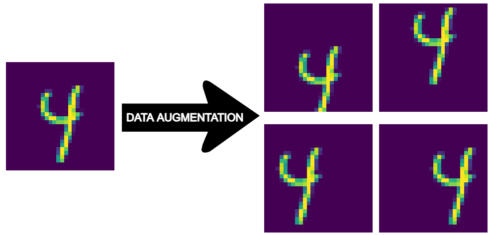

Published on: IEEE
This paper presents a tri-objective Optimal Phasor Measurement Units (PMUs) Placement (OPP) strategy that is focused on the minimization of i) the total number of PMU channels, ii) the maximum state estimation uncertainty ...
Published on: Towards Data Science
In the novel Flatland, characters living in a two-dimensional world find themselves perplexed and unable to comprehend when they encounter a three-dimensional being. I use this analogy ...
Published on: Towards Data Science
Imagine a room filled with colorful balloons, each symbolizing a data point in a dataset. Due to their different features, the balloons float at different heights. Now, picture some helium ...
Published on: Towards Data Science
In the refined atmosphere of 18th-century London, a pioneering individuals embarked on a quest that would forever alter our understanding of data and statistics. John Arbuthnot, a distinguished Scottish physician ...
Published on: Towards Data Science
How do streaming platforms like Netflix recommend the perfect movie for your evening? How can we optimize player positioning in sports like soccer? How can we identify fraudulent activities in financial networks? ...
Published on: Towards Data Science
SVM is a powerful and versatile algorithm, which, at its core, can delineate optimal hyperplanes in a high-dimensional space, effectively segregating the different classes of a dataset ...
Published on: Towards Data Science
Fundamental learning algorithms as logistic regression or linear regression are often too simple to achieve adequate results for a machine learning problem. While a possible solution is to use neural ...

Published on: Towards Data Science
As Computer Vision applications are becoming omnipresent in our lives, understanding the functioning principles of Convolutional Neural Networks is essential for every Data Science practitioner ...
Published on: Towards Data Science
As the nature of neural networks’ developing process is iterative, we need to take advantage of each possible expedient to minimize the training time ...
Published on: Towards Data Science
Training a neural network from scratch takes a great extent of time and huge computation power. One way to overcome both these obstacles is to implement transfer learning ...
Published on: Towards Data Science
Modern Deep Learning libraries are powerful tools but they may lead practitioners to take for granted neural networks’ functioning principles. In this project, I build a deep neural network without the aid of any deep learning library ...
Published on: Towards Data Science
When training a deep neural network, it’s often troublesome to achieve the same performances on both the training and validation sets. A considerably higher error on the validation set is a clear flag for ...

Published on: Towards Data Science
Optical Character Recognition (OCR) is present in our daily life more regularly than we imagine. When we use Google Translate to translate text from pic ...

Published on: Towards Data Science
Coding and explaining the process of synthetic data generation to enhance the accuracy of an OCR learning algorithm. One of the most reliable ways to enhance the performance of a low bias ...